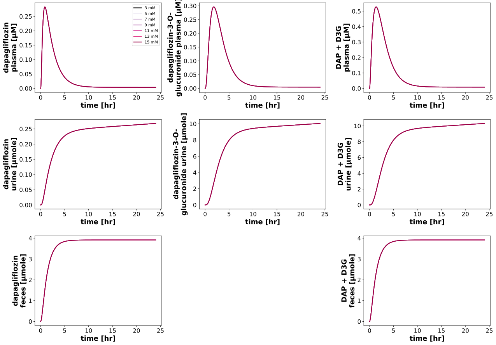
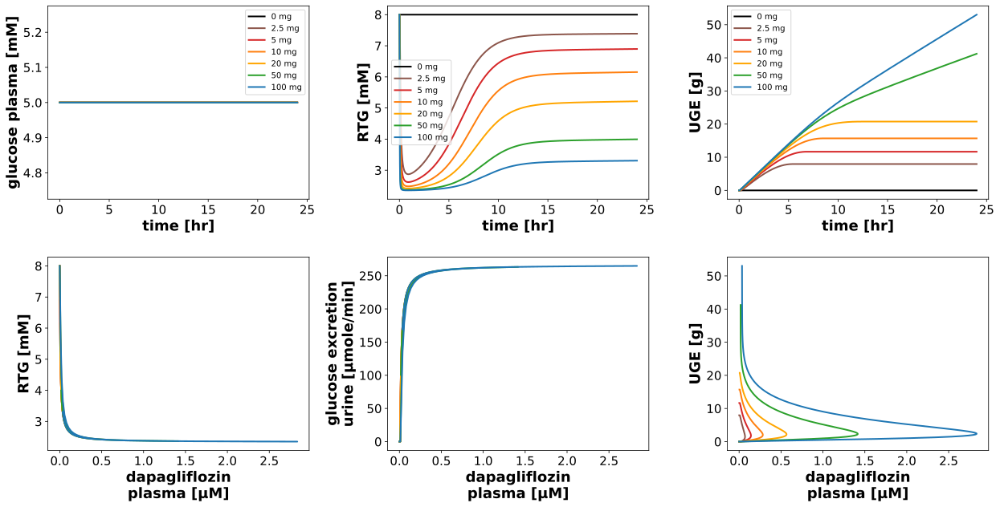
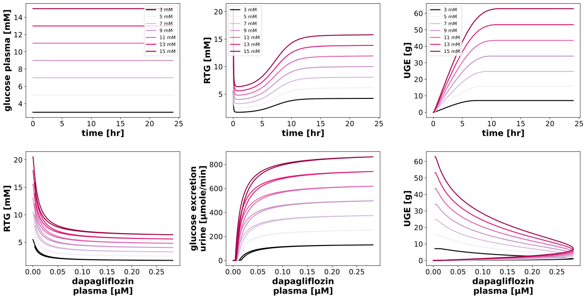

DoseDependencyExperiment
Models
Datasets
Figures
- Fig_dapagliflozin_dependency_pk: DoseDependencyExperiment_Fig_dapagliflozin_dependency_pk.svg
- Fig_glucose_dependency_pk: DoseDependencyExperiment_Fig_glucose_dependency_pk.svg
- Fig_dapagliflozin_dependency_pd: DoseDependencyExperiment_Fig_dapagliflozin_dependency_pd.svg
- Fig_glucose_dependency_pd: DoseDependencyExperiment_Fig_glucose_dependency_pd.svg
{kind=link}
{kind=link}
{kind=link}
Fig_dapagliflozin_dependency_pk

|
Fig_glucose_dependency_pk
|  |
Fig_dapagliflozin_dependency_pd
|  |
Fig_glucose_dependency_pd
|  |
Code
../../../../experiments/misc/dose_dependency.py
from typing import Dict
from sbmlsim.plot import Axis, Figure, Plot
from sbmlsim.simulation import Timecourse, TimecourseSim
from pkdb_models.models.dapagliflozin.experiments.base_experiment import DapagliflozinSimulationExperiment
from pkdb_models.models.dapagliflozin.helpers import run_experiments
class DoseDependencyExperiment(DapagliflozinSimulationExperiment):
"""Test different doses of dapagliflozin and different glucose concentrations."""
dapagliflozin_doses = [0, 2.5, 5, 10, 20, 50, 100, 250, 500] # [mg]
glucose_values = [5, 7, 9, 11, 13, 15] # [mM]
dpi = 300
legend_font_size = 10
colors_glc = ["black", '#d4b9da', '#c994c7', '#df65b0', '#dd1c77', '#980043']
def simulations(self) -> Dict[str, TimecourseSim]:
Q_ = self.Q_
tcsims = {}
# dapagliflozin
for dap in self.dapagliflozin_doses:
tcsims[f"dapagliflozin_glc5_dap{dap}"] = TimecourseSim(
Timecourse(
start=0,
end=24 * 60, # [min]
steps=3000,
changes={
**self.default_changes(),
f"PODOSE_dap": Q_(dap, "mg"),
f"[KI__glc_ext]": Q_(5, "mM"), # Glucose
},
)
)
# glucose
for glc in self.glucose_values:
for dose in [0, 10]:
tcsims[f"glucose_glc{glc}_dap{dose}"] = TimecourseSim(
Timecourse(
start=0,
end=24 * 60, # [min]
steps=3000,
changes={
**self.default_changes(),
f"PODOSE_dap": Q_(dose, "mg"),
f"[KI__glc_ext]": Q_(glc, "mM"), # Glucose
},
)
)
return tcsims
def figures(self) -> Dict[str, Figure]:
return {
**self.figure_pk(),
**self.figure_pd(),
}
def figure_pk(self) -> Dict[str, Figure]:
figures = {}
Figure.legend_fontsize = self.legend_font_size
Figure.fig_dpi = self.dpi
for key in ["dapagliflozin", "glucose"]:
if key == "dapagliflozin":
values = self.dapagliflozin_doses
colors = self.dose_colors
name = "Pharmacokinetics: Dapagliflozin dose dependency"
elif key == "glucose":
values = self.glucose_values
colors = self.colors_glc
name = "Pharmacokinetics: Glucose dependency"
fig = Figure(
experiment=self,
sid=f"Fig_{key}_dependency_pk",
num_rows=1,
num_cols=5,
name=name
)
plots = fig.create_plots(xaxis=Axis("time", unit="hr"), legend=True)
sids = [
# plasma
"[Cve_dap]",
"[Cve_d3g]",
#"[Cve_daptot]",
# urine
"Aurine_dap",
"Aurine_d3g",
#"Aurine_daptot",
# feces
"Afeces_dap",
#None,
#"Afeces_daptot",
]
for ksid, sid in enumerate(sids):
if not sid:
continue
plots[ksid].set_yaxis(label=self.labels[sid], unit=self.units[sid])
if key == "dapagliflozin":
for kval, value in enumerate(values):
plots[ksid].add_data(
task=f"task_{key}_glc5_dap{value}",
xid="time",
yid=sid,
label=f"{value} {'mg' if key == 'dapagliflozin' else 'mM'}",
color=(colors[kval] if key == "glucose" else self.dose_colors[value]),
)
elif key == "glucose":
for dose in [0, 10]:
for kval, value in enumerate(values):
plots[ksid].add_data(
task=f"task_{key}_glc{value}_dap{dose}",
xid="time",
yid=sid,
label=f"{value} {'mg' if key == 'dapagliflozin' else 'mM'} at {dose} mg",
color=(colors[kval] if key == "glucose" else self.dose_colors[value]),
linestyle="-" if dose == 10 else "--",
)
figures[fig.sid] = fig
return figures
def figure_pd(self) -> Dict[str, Figure]:
figures = {}
Figure.fig_dpi = self.dpi
for key in ["dapagliflozin", "glucose"]:
if key == "dapagliflozin":
values = self.dapagliflozin_doses
colors = self.dose_colors
name = "Pharmacodynamics: Dapagliflozin dose dependency"
elif key == "glucose":
values = self.glucose_values
colors = self.colors_glc
name = "Pharmacodynamics: Glucose dependency"
fig = Figure(
experiment=self,
sid=f"Fig_{key}_dependency_pd",
num_rows=1,
num_cols=5,
name=name,
)
plots = fig.create_plots(xaxis=Axis("time", unit="hr"), legend=True)
sids = [
#"[KI__glc_ext]",
"KI__RTG",
"KI__UGE",
]
for ksid, sid in enumerate(sids):
plots[ksid].set_yaxis(label=self.labels[sid], unit=self.units[sid])
for ksid, sid in enumerate(sids):
if key == "dapagliflozin":
for kval, value in enumerate(values):
plots[ksid].add_data(
task=f"task_{key}_glc5_dap{value}",
xid="time",
yid=sid,
label=f"{value} {'mg' if key == 'dapagliflozin' else 'mM'}",
color=(colors[kval] if key == "glucose" else self.dose_colors[value]),
)
elif key == "glucose":
for dose in [0, 10]:
for kval, value in enumerate(values):
plots[ksid].add_data(
task=f"task_{key}_glc{value}_dap{dose}",
xid="time",
yid=sid,
label=f"{value} {'mg' if key == 'dapagliflozin' else 'mM'} at {dose} mg",
color=(colors[kval] if key == "glucose" else self.dose_colors[value]),
linestyle="-" if dose == 10 else "--",
)
# exposure-response panels
for ksid in range(2, 5):
plots[ksid].set_xaxis(label=self.label_dap_plasma, unit=self.unit_dap)
plots[2].set_yaxis(label=self.label_rtg, unit=self.unit_rtg)
plots[3].set_yaxis(label=self.labels["KI__GLCEX"], unit=self.units["KI__GLCEX"])
plots[4].set_yaxis(label=self.label_uge, unit=self.unit_uge)
for kval, value in enumerate(values):
series_label = f"{value} {'mg' if key == 'dapagliflozin' else 'mM'}"
color = (colors[kval] if key == "glucose" else self.dose_colors[value])
if key == "dapagliflozin":
plots[2].add_data(
task=f"task_{key}_glc5_dap{value}",
xid="[Cve_dap]",
yid="KI__RTG",
label=series_label,
color=color,
)
plots[3].add_data(
task=f"task_{key}_glc5_dap{value}",
xid="[Cve_dap]",
yid="KI__GLCEX",
label=series_label,
color=color,
)
plots[4].add_data(
task=f"task_{key}_glc5_dap{value}",
xid="[Cve_dap]",
yid="KI__UGE",
label=series_label,
color=color,
)
elif key == "glucose":
for dose in [0, 10]:
plots[2].add_data(
task=f"task_{key}_glc{value}_dap{dose}",
xid="[Cve_dap]",
yid="KI__RTG",
label=f"{series_label} at {dose} mg",
color=color,
linestyle="-" if dose == 10 else "--",
)
plots[3].add_data(
task=f"task_{key}_glc{value}_dap{dose}",
xid="[Cve_dap]",
yid="KI__GLCEX",
label=f"{series_label} at {dose} mg",
color=color,
linestyle="-" if dose == 10 else "--",
)
plots[4].add_data(
task=f"task_{key}_glc{value}_dap{dose}",
xid="[Cve_dap]",
yid="KI__UGE",
label=f"{series_label} at {dose} mg",
color=color,
linestyle="-" if dose == 10 else "--",
)
figures[fig.sid] = fig
return figures
if __name__ == "__main__":
run_experiments(DoseDependencyExperiment, output_dir=DoseDependencyExperiment.__name__)